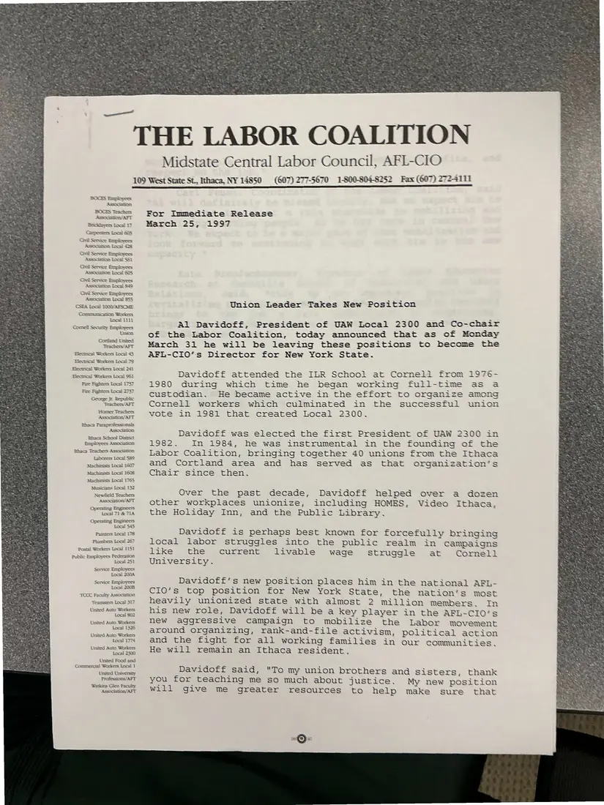
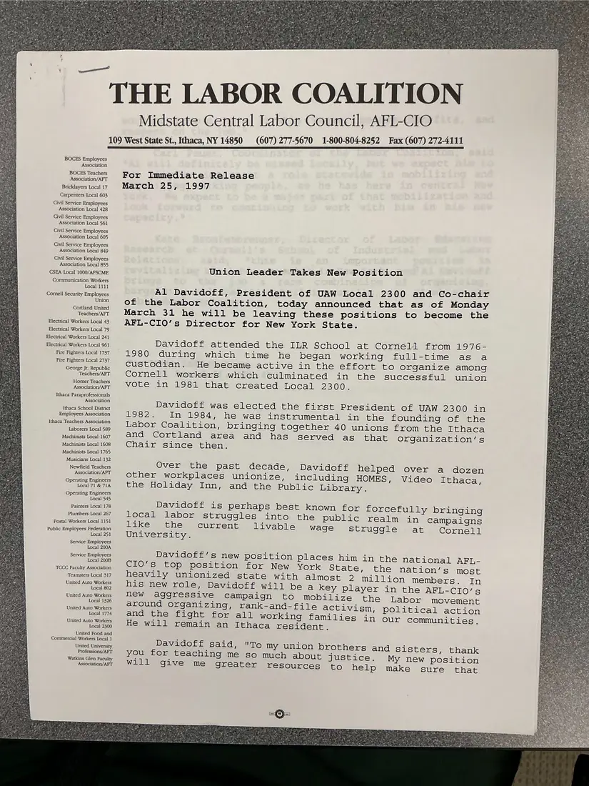

Press release, 1 page, plus 1 additional copy
Press release: “Union Leader Takes New Position” (Al Davidoff)
March 25, 1997
Announces that Al Davidoff, president of UAW Local 2300 and co-chair of the Labor Coalition, will become the AFL-CIO's Director for New York State. It recounts his path from Cornell custodian to union founder and his role in founding the Coalition in 1984. Two copies were photographed.
Download or cite this itemPages


(open zoom view)Read the page text (machine-read, contains errors)
This text was generated automatically from the photograph and has not been corrected. The image is the authoritative record.
THE LABOR BOCES Exaniorees Association BOCES Teachers Association‘ AFT Bncknvers Local IT Carpenters Local 608 Gil Serexe Eraplowees Associaton Los] 438 Civil Senrice Exaployees AsSsocamion Local $$1 Chai Serve Eaployess Associanon Local 5 Civil Service Boaplioyees Association Local 49 Cal Senace Exapleyees Assocm@ion Local 855 CSEA Local 1000/AFSCME Compmamication Workers Local 1101 CGocnell Securky Employees Unaon, CGonknd Usied Teachers/AFT Electnical Workers Local 43 Blecmical Workers Local 79 Blectmcal Workers Local 241 EXecenical Workers Local 961 Fare Rightets Local 1737 Fire Fighters Local 2737 Teachess/AFT Homer Teachers Assogtion/AFT Bhaca Parapeofessonals AssoGaiion tthaca Schoo! District Employees Assooahon Mhace Teachers Associaton Laborers Local $89 Nexctumists Local 1607 Machinssts Local 1008 Machinists Local 1765 Musicians Local 132 Newiield Teachers Associanon/AFT Operating Engineers Local 71 & JIA Operating Engincers Local $45 Painzers Local 178 Phumbers Local 267 Postal Workers Local 1151 Public Employees Federation Local 251 Service Employees Local 200A Service Employees Local 2008 TCOC Faculty Assocation Teamsters Local 317 United Auto Workers Local 802 United Auto Workers Local 1326 United Auto Workers Local 1774 United Auto Workers Local 2300 United Food and Commercial Workers Local 1 Unaed University Professions/AFT Watkins Glen Faculty Association/AFT 109 West State St, Ithaca, NY 14850 COALITION Midstate Central Labor Council, AFL-CIO (607) 277-5670 1-800-804-8252 Fax (607) 2724111 For Immediate Release March 25, 1997 Union Leader Takes New Position Al Davidoff, President of UAW Local 2300 and Co-chair ef the Labor Coalition, today announced that as of Monday March 31 he will be leaving these positions to become the AFL-CIO’s Director for New York State. Davidoff attended the ILR School at Cormeld from 1976- 1980 during which time he began working full-time as a custodian. He became active in the effort to organize among Cornell workers which culminated in the successful union vote in 1981 that created Local 2300. Davidoff was elected the first President of UAW 2300 in 1982. In 1984, he was instrumental in the founding of the Labor Coalition, bringing together 40 unions from the Ithaca and Cortland area and has served as that organization’s Chair since then. Over the past decade, Davidoff helped over a dozen other workplaces unionize, including HOMES, Video Ithaca, the Holiday Inn, and the Public Library. Davidoff is perhaps best known for forcefully bringing local labor struggles into the public realm in campaigns like the University. current livable wage struggle at Cornell Davidoff’s new position places him in the national AFL- CIO’s top position for New York State, the nation’s most heavily unionized state with almost 2 million members. In his new role, Davidoff will be a key player in the AFL-CIO’s new aggressive campaign to mobilize the Labor movement around organizing, rank-and-file activism, political action and the fight for all working families in our communities. He will remain an Ithaca resident. Davidoff said, “To my union brothers and sisters, thank you for teaching me so much about justice. My new position will give me greater resources to help make sure that
Additional copies
The same document was photographed more than once. These copies may carry different handwriting, stamps, or paper.


(open zoom view)Read the page text (machine-read, mostly readable)
This text was generated automatically from the photograph and has not been corrected. The image is the authoritative record.
~ ‘THE LABOR COALITION BOCES Employees Association BOCES Teachers Association/AFT Bricklayers Local 17 Carpenters Local 603 Civil Service Employees Association Local 428 Civil Service Employees Association Local 561 Civil Service Employees Association Local 605 Civil Service Employees Association Local 849 Civil Service Employees Association Local 855 CSEA Local 1000/AFSCME Communication Workers Local 1111 Cornell Security Employees Union Cortland United Teachers/AFT Electrical Workers Local 43 Electrical Workers Local 79 Electrical Workers Local 241 Electrical Workers Local 961 Fire Fighters Local 1737 Fire Fighters Local 2737 George Jr. Republic Teachers/AFT Homer Teachers Association/AFT Ithaca Paraprofessionals Association Ithaca School District Employees Association Ithaca Teachers Association Laborers Local 589 Machinists Local 1607 Machinists Local 1608 Machinists Local 1765 Musicians Local 132 Newfield Teachers Association/AFT Operating Engineers Local 71 & 71A Operating Engineers Local 545 Painters Local 178 Plumbers Local 267 Postal Workers Local 1151 Public Employees Federation Local 251 Service Employees Local 200A Service Employees Local 200B TCCC Faculty Association Teamsters Local 317 United Auto Workers Local 802 United Auto Workers Local 1326 United Auto Workers Local 1774 United Auto Workers Local 2300 United Food and Commercial Workers Local 1 United University Professions/APT Watkins Glen Faculty Association/AFT 109 West State St., Ithaca, NY 14850 Midstate Central Labor Council, AFL-CIO (607) 277-5670 1-800-804-8252 Fax (607) 272-4111 For Immediate Release March 25, 1997 Union Leader Takes New Position Al Davidoff, President of UAW Local 2300 and Co-chair of the Labor Coalition, today announced that as of Monday March 31 he will be leaving these positions to become the AFL-CIO’s Director for New York State. Davidoff attended the ILR School at Cornell from 1976- 1980 during which time he began working full-time as a custodian. He became active in the effort to organize among Cornell workers which culminated in the successful union vote in 1981 that created Local 2300. Davidoff was elected the first President of UAW 2300 in 1982. In 1984, he was instrumental in the founding of the Labor Coalition, bringing together 40 unions from the Ithaca Over the past decade, Davidoff helped over a dozen other workplaces unionize, including HOMES, Video Ithaca, the Holiday Inn, and the Public Library. current University. Davidoff’s new position places him in the national AFL- CIO’s top position for New York State, DOs: the nation’s most heavily unionized state with almost 2 million members. around organizing, rank-and-file activis and the fight for all working families He will remain an Ithaca resident. mM, political action 1n Our communities. sters, thank My new position
See something wrong, or recognize a person or event? Send a correction. If you hold rights in this item or think it should not be public, write to the same address.